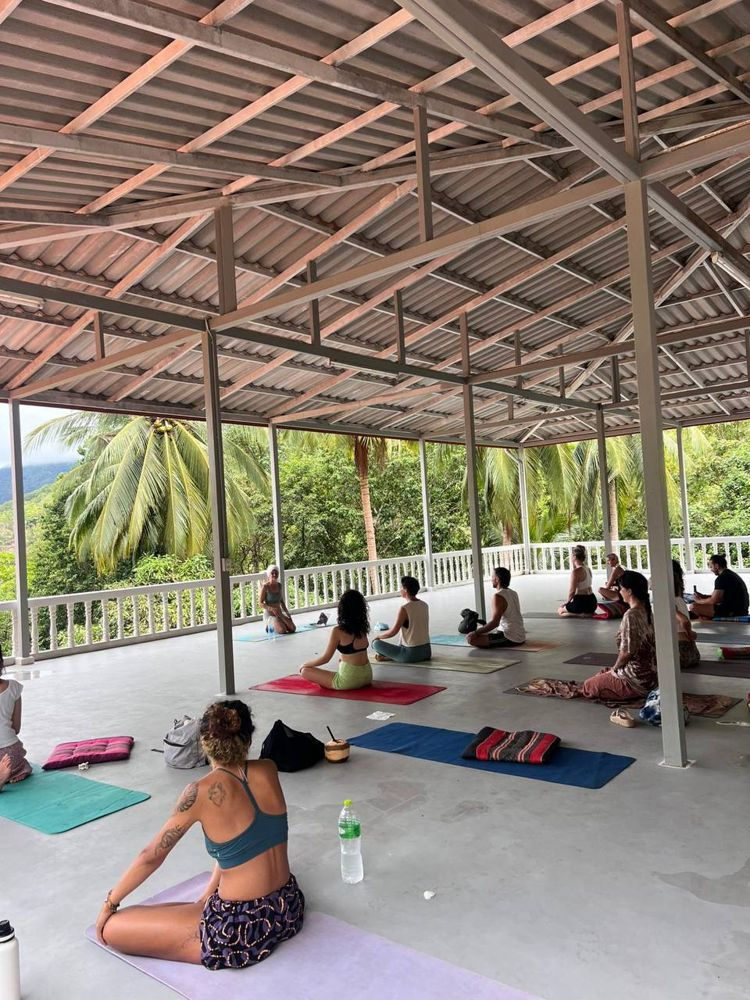
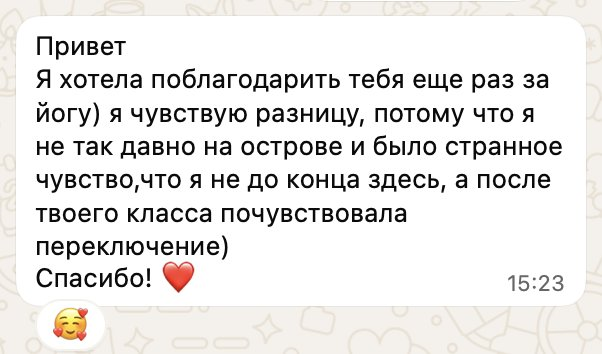
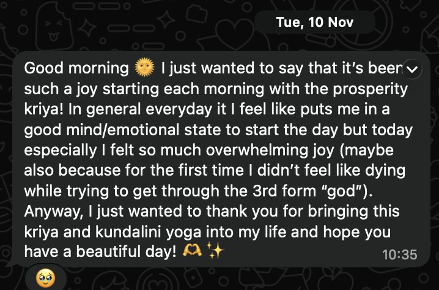
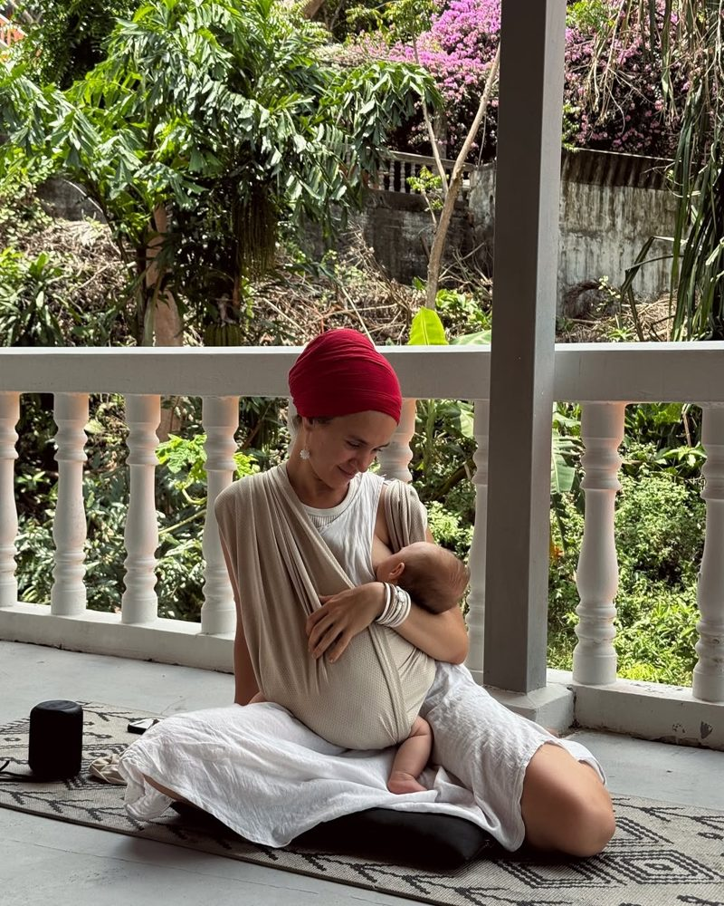

Утро, после которого день идёт по‑другому
Кундалини-йога на открытой веранде Китайского храма среди джунглей: крия, дыхание, медитация и мантра. Подходит и новичкам.
Лучше записаться или следить за группой WhatsApp: иногда занятия отменяются.
Кундалини-йога на открытой веранде Китайского храма среди джунглей: крия, дыхание, медитация и мантра. Подходит и новичкам.
Лучше записаться или следить за группой WhatsApp: иногда занятия отменяются.
Кундалини-йога работает со всем телом сразу: движение, дыхание, медитация и звук. Люди приходят за разным, а уходят обычно с одним ощущением — собранности и лёгкости.
После утренней практики голова ясная, а сил больше, чем после кофе.
Дыхательные техники и медитация снимают тревогу и напряжение.
Крии укрепляют пресс, спину и внутренний стержень.
Особенно ценно, если вы недавно на острове и ещё не нашли своё место.
Начинаем с мантры, чтобы переключиться с суеты на практику.
Мягко разогреваем позвоночник и тело.
Основная часть: серия упражнений с дыханием на тему занятия.
Глубокий отдых лёжа, чтобы тело усвоило практику.
Завершаем медитацией и мантрой.
Медитации, чтобы успокоиться и восстановиться
Прощение, любовь, отпустить прошлые отношения, исцелить разбитое сердце
Крии и медитации на процветание и денежный поток
Личная сила, самооценка и сила воли
А ещё — практики для каждой из семи чакр:


«Я не так давно на острове, и было странное чувство, что я не до конца здесь, а после твоего класса почувствовала переключение.»
«It’s been such a joy starting each morning with the prosperity kriya! Thank you for bringing this kriya and kundalini yoga into my life.»
«Вчора робила на серцеву чакру і прям після відчула таке гаряче тепло із серцевої чакри. Просто вау!»
«Я відчувала таку єдність з Тобою, з Собою, з Богом, зі Всесвітом! Я посміхалася і плакала одночасно під час всієї практики.»



Я Катерина (Shant Daspreet Kaur). Преподаю кундалини-йогу с 2023 года, за это время на мои занятия пришли сотни учеников.
Я сертифицированный преподаватель KRI (Kundalini Research Institute) — это международный стандарт обучения преподавателей кундалини-йоги. Прошла программу Aquarian Teacher Level One (220 часов) в Украине в 2023–2024 годах.

Практиковать дома можно вместе со мной на YouTube:

Да. Все упражнения можно делать в своём темпе, а я подскажу более лёгкие варианты.
Нет. В кундалини-йоге главное — дыхание и внимание, а не гибкость.
Напишите мне до занятия: расскажете о себе, и я подскажу, что вам подойдёт.
На английском. Если что-то непонятно — переведу на русский или украинский.
100 бат за вход в храм и донат от 0 до 400 бат — сколько считаете нужным.
Напишите мне, и я подскажу, когда ближайшее занятие. Лучше записаться или следить за группой WhatsApp: иногда занятия отменяются.